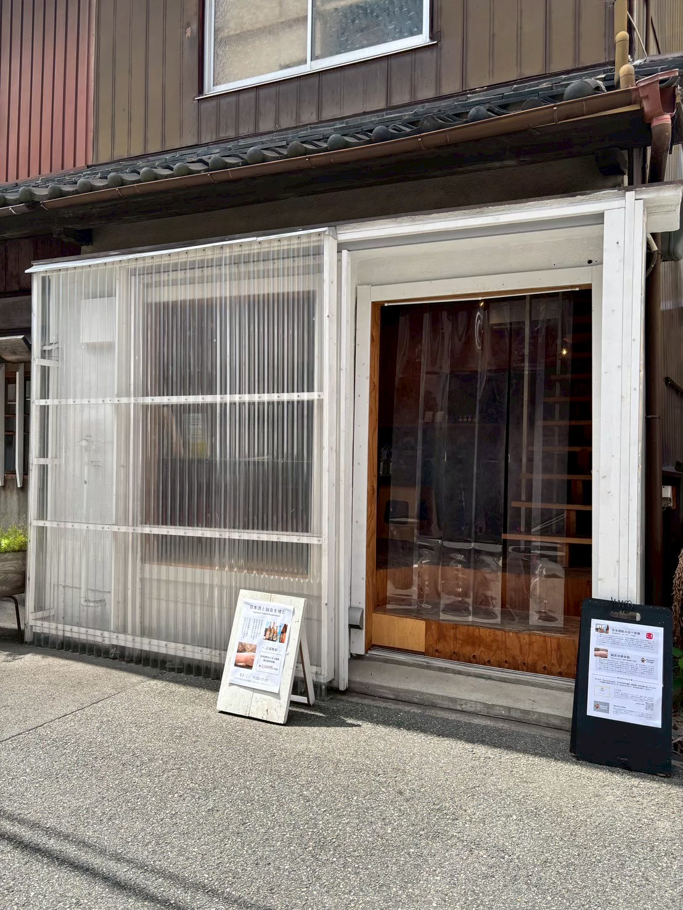

日本酒の水先案内人
久野 惣司 Soji Kuno
1989年生まれ、平成元年生まれ。関西大学文学部比較宗教学専修卒。落語研究会に所属し、言葉で「伝える」技術を磨く。
SSI認定唎酒師を取得後、京都・伏見の「藤岡酒造（蒼空）」での蔵人見習い、兵庫・灘の「泉酒造（仙介）」にて蔵人として勤務。造り手の視点と苦労を肌で学ぶ。
2018年、大阪・中崎町に「日本酒片手にーポンカター」を開業。「日本酒×文化×エンターテインメント」を掲げ、現在は行政書士の資格も併せ持つ異色の「水先案内人」として活動中。
元蔵人 × 日本酒BAR店主
「何を頼めばいいか分からない」大海原から、あなただけの最高の一杯へ。
プロだからこそ伝えられる、知識と体験の4ヶ月。
日本酒の世界は、専門用語やラベルの数字という「霧」に包まれています。
「日本酒の水先案内人」は、造り（蔵人）から提供（バー店主）までを知り尽くした経験から、
あなたが直面する「迷い」に対して、現実的でスマートな最適解を提示します。
数字の良し悪しではなく、蔵人が心血を注いだ「価値」を見極める力を養います。
「辛口」を卒業し、自分の好みを正確に伝えるキーワードを手に入れます。
メニューを読み解き、店主との会話を通じて「最高の一杯」を引き出す技術を学びます。
日本酒の水先案内人
1989年生まれ、平成元年生まれ。関西大学文学部比較宗教学専修卒。落語研究会に所属し、言葉で「伝える」技術を磨く。
SSI認定唎酒師を取得後、京都・伏見の「藤岡酒造（蒼空）」での蔵人見習い、兵庫・灘の「泉酒造（仙介）」にて蔵人として勤務。造り手の視点と苦労を肌で学ぶ。
2018年、大阪・中崎町に「日本酒片手にーポンカター」を開業。「日本酒×文化×エンターテインメント」を掲げ、現在は行政書士の資格も併せ持つ異色の「水先案内人」として活動中。
3月から6月まで、月ごとに知識の解像度を高めていきます。
〜「ラベルの数字」という霧を晴らす〜
〜「辛口ください」から卒業する〜
〜「クセ」を「ポテンシャル」に変える〜
〜「混ぜ物」という呪縛から自由になる〜
大阪市北区中崎1丁目11-7 第三中野ビル 2F/3F
地下鉄谷町線「中崎町駅」徒歩2分
通常営業日：木・金・土曜日
営業時間：18:00 〜 23:00

各回、定員になり次第締め切らせていただきます。（定員10名）
プロの「本音」を聞きながら、日本酒の本当の楽しみ方を見つけましょう。